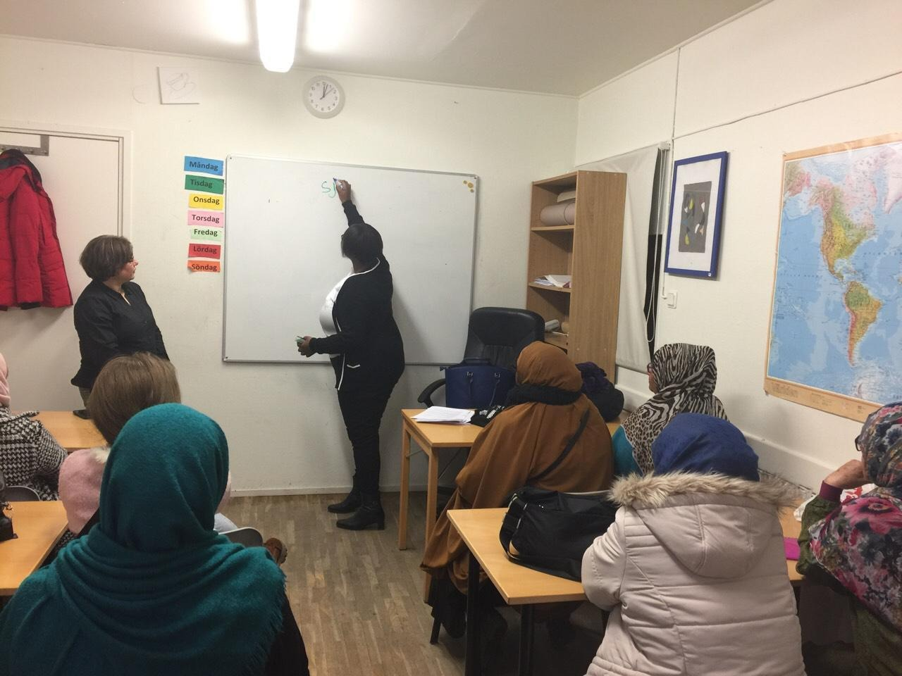

Vi stödjer kvinnor i att stärka sitt självförtroende, utveckla sina färdigheter, utvecklas i sina karriärer och skapa meningsfulla vägar till personlig och professionell utveckling.
WEINSE:s program för coachning och mentorskap erbjuder kvinnor stöd och vägledning för att hjälpa dem att identifiera sina styrkor, formulera tydliga mål och stärka sitt självförtroende.
Genom individuell mentorskap och mentorskap i grupp kan deltagarna stärka sin yrkesmässiga inriktning, utveckla sitt ledarskap, bygga nätverk och främja sin personliga utveckling.
Vi skapar stödjande miljöer där kvinnor kan lära sig, reflektera, stärka sitt självförtroende och få vägledning från mentorer, yrkesverksamma och andra deltagare.

Vi stödjer kvinnor i att identifiera sina styrkor, stärka sitt självförtroende och formulera personliga mål.
Vi hjälper deltagarna att utforska karriärmöjligheter, yrkesvägar och strategier för att komma in på eller utvecklas vidare på arbetsmarknaden.
Vi stärker kommunikationsförmåga, beslutsfattande, ledarskap och professionellt självförtroende.
Vi sammanför kvinnor med mentorer, yrkesverksamma, organisationer och nätverk som kan stödja deras utveckling.
Vi hjälper deltagarna att formulera realistiska mål och utveckla praktiska steg för att uppnå dem.
Vi skapar möjligheter för kvinnor att dela kunskap och erfarenheter samt stödja varandra.
Programmet kan stödja kvinnor som är på väg in på arbetsmarknaden, byter karriär, utvecklar sitt ledarskap, bygger upp ett företag, utökar sina nätverk eller söker större självförtroende och tydligare riktning.
Kontakta WEINSE och få mer information om kommande möjligheter till mentorskap och coachningsaktiviteter.
Kontakta WEINSE